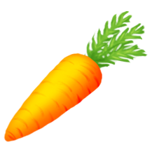

Wheat
Wheat is a field crop unlocked at experience level 1. It is the very first crop unlocked in the game and, by far, the one which is used to make the most different products.Corn
Corn is a field crop unlocked at experience level 2. It is the second crop unlocked in the game and is used to make several food products, notably popcorn and feed forSoybean 
Sugarcane
Sugarcane is a field crop unlocked at experience level 7. It is exclusively used to make sugar and syrup in the Sugar Mill, and cannot be combined with any other product.Carrot 
Carrots are field crops unlocked at experience level 9. They are used to make many recipes, notably feed for pigs and goats, as well as to feed bunnies, donkeys and horses.Indigo
Indigo is a field crop unlocked at experience level 13. It is used to dye cotton fabric and wool, make bouquets and floral candles.Pumpkin
Pumpkins are field crops unlocked at experience level 15. It is unlocked at an earlier level but have limited uses, so it is common to be found on Daily Dirt.Apple
Apples are fruit crops unlocked at experience level 15. They grow on apple trees and can be harvested four times, with each harvest giving varying numbers of apples. They are the first tree crop unlocked in the game.Cotton
Cotton is a field crop unlocked at experience level 18. It is used to make multiple products, like cotton fabric and bouquets. Like all crops, they are stored in the silo.Raspberry
Raspberries are fruit crops unlocked at experience level 19. They grow on raspberry bushes and can be harvested four times. They are used as ingredients in several food products but also as a dyeing agent for clothes and a scent for candles.Cherry
Cherries are fruit crops unlocked at experience level 22. They grow on cherry trees and can be harvested four times. They are used as ingredients in several food products.Chili Pepper
Chili peppers are field crops unlocked at experience level 25. They are used to make many recipes, including salsa, which is used to make other products. Like all crops, they are stored in the silo.Blackberyy
Blackberries are fruit crops unlocked at experience level 26. They grow on blackberry bushes and can be harvested four times. They are used as ingredients in several products.Tomato
Tomatoes are field crops unlocked at experience level 30. They are used to make many recipes, including juice and sauce which are then used to make other products.Strawberry
Strawberries are field crops unlocked at experience level 34. They are the field crop which takes the longest time to grow. They are used as ingredients in several food products but also as a dyeing agent for clothes and a scent for candles.